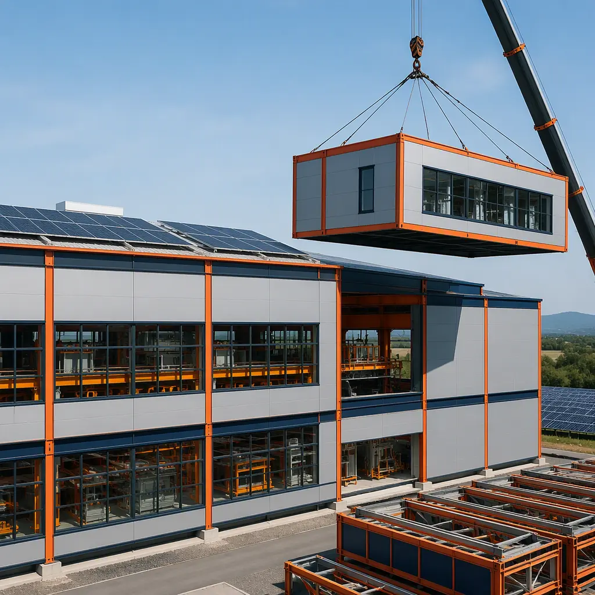
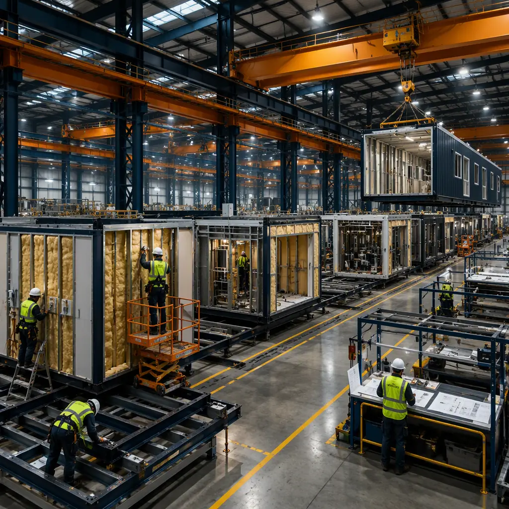
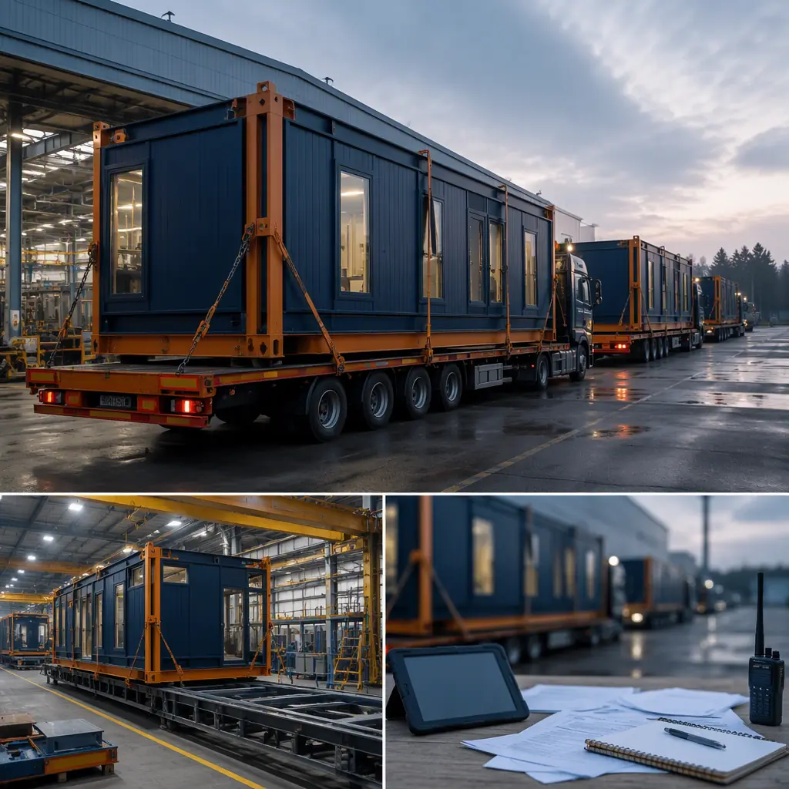

The global energy transition is a manufacturing capacity challenge of unprecedented scale. The International Energy Agency projects that annual global solar PV manufacturing capacity must reach 1,200 GW by 2030, wind turbine nacelle assembly must triple, and electrolyzer production must scale by a factor of 200 from 2023 levels. Conventional industrial construction, with its 24–36 month delivery timeline for clean rooms, heavy-lift crane bays, and precision utility infrastructure, cannot keep pace. Modular prefabrication is the answer: factory-built production modules with integrated clean room environments, heavy-duty floor slabs supporting 500-tonne wind turbine nacelles, and pre-commissioned MEP systems — deployed in 10–16 months. This article examines the engineering requirements across three sub-sectors — solar panel fabrication, wind turbine component assembly, and hydrogen electrolyzer production — and demonstrates why modular construction matches the speed of the energy transition.

The Renewable Energy Manufacturing Capacity Gap
Three numbers define the urgency of the clean energy manufacturing build-out, and all three point toward modular construction as the enabling delivery method:
Solar PV manufacturing must grow from approximately 600 GW/year in 2023 to 1,200 GW/year by 2030. That translates to roughly 200 new solar panel gigafactories worldwide — each producing 3–5 GW of panels annually across polysilicon ingot growth, wafer slicing, cell fabrication, and module assembly. These facilities require ISO Class 5–7 clean rooms, ultrapure water systems delivering 18.2 MΩ·cm resistivity, and process cooling loops rejecting 15–20 MW of heat from diffusion furnaces and PECVD tools. For context on the specialized MEP integration required, see our analysis of modular MEP systems for industrial facilities.
Wind turbine nacelle assembly capacity must reach 180 GW/year by 2030, up from approximately 120 GW/year. A 15 MW offshore wind turbine nacelle weighs 500–700 tonnes, requiring overhead crane runways rated for 200+ tonnes per hook, foundation slabs with 30–50 kN/m² floor loading, and 30-meter clear spans with no interior columns. Modular construction addresses these demands through purpose-designed heavy-industrial modules with integrated crane runway steel, factory-cast floor slabs with embedded rail systems, and pre-aligned column connections that eliminate weeks of field surveying.
Hydrogen electrolyzer production must scale from approximately 1 GW/year in 2023 to 200 GW/year by 2030. PEM electrolyzer manufacturing shares engineering requirements with semiconductor fabrication — ISO Class 5–6 clean rooms for membrane electrode assembly coating, explosion-proof electrical for hydrogen testing areas, and ultrapure water systems. The global pipeline of announced facilities covers only 40 GW of the 200 GW needed, leaving a 160 GW gap. The engineering principles are shared with modular clean room construction for semiconductor facilities — both demand ISO-classified environments with precision temperature and humidity control and ultrapure utility delivery.

Speed Comparison: Modular vs Conventional by Manufacturing Sector
The schedule advantage of modular construction varies by sector, driven by the complexity of MEP integration and the degree to which process-specific infrastructure can be factory-installed. The following table summarizes delivery timelines across the three renewable energy manufacturing sub-sectors:
| Sector | Conventional Build | Modular Build | Time Saved | Key Accelerator |
|---|---|---|---|---|
| Solar Cell Fab (5 GW) | 24–30 months | 12–16 months | 40–50% | Factory-built clean room modules with pre-certified ISO classification |
| Wind Nacelle Assembly (4 lines) | 18–24 months | 10–14 months | 40–45% | Heavy-load floor slabs with embedded crane rails cast in factory |
| PEM Electrolyzer Fab (2 GW) | 22–28 months | 12–16 months | 40–45% | Pre-commissioned MEP + hazardous-area electrical in clean room modules |
| Weighted Average | 21–27 months | 11–15 months | ~42% | Parallel factory production + site preparation |
These schedule reductions are not projections — they are validated against documented modular construction project timelines for industrial facilities of comparable complexity. The key mechanism is the overlapping of factory module production with site preparation: while the factory produces clean room modules, process utility skids, and heavy-load assembly bays, the site team completes foundations, underground utilities, and equipment pads. When modules arrive on site, the remaining work is connection — module-to-module structural bolting, inter-module MEP tie-ins, and utility commissioning — rather than stick-by-stick construction from an empty slab. For a deeper understanding of how these timelines translate to project economics, refer to our modular construction cost guide.
Solar Panel Gigafactories: Clean Room Modules with Precision Utility Integration
Solar cell manufacturing is the most clean-room-intensive of the three sub-sectors. A 5 GW monocrystalline PERC or TOPCon cell fab contains approximately 40,000 square meters of clean room space across four process zones: wafer texturing (ISO Class 7), diffusion and oxidation (ISO Class 6), PECVD/ALD coating (ISO Class 6), and metallization (ISO Class 7). The clean room HVAC system must maintain temperature control at ±0.5°C and humidity at 45 ±5% RH while managing heat loads of 500–800 W/m² from process tools.
Clean room module construction solves the field-quality problem. Achieving ISO Class 5–7 standards on a conventional construction site — with concrete dust, humidity swings, and 200+ workers during peak construction — requires months of progressive cleaning and repeated certification attempts. Modular clean room modules are constructed and certified in the factory: HEPA fan filter units are installed and acceptance-tested, raised access floors are leveled and sealed, wall panels are gasketed and leak-tested, and the module is delivered with a factory-issued ISO classification certificate. Site work reduces to module-level mechanical and electrical connections, with the clean room environment never exposed to construction site contamination. This approach mirrors the methodology in our modular semiconductor clean room guide.
![Interior of modular prefabricated solar cell manufacturing clean room module, ISO Class 6 clean room environment with HEPA fan filter units in ceiling grid, PECVD process tool and automation track installed on raised access floor, ultrapure water and process gas piping routed through dedicated utility chases, yellow clean room lighting for photolithography-sensitive processes, dark navy structural steel columns with warm steel orange accents, modular prefabricated construction for solar gigafactory](../generated/renewable-energy-modular-solar.webp)
Ultrapure water and chemical delivery. A 5 GW solar cell fab consumes 150–200 m³/hour of ultrapure water, requiring RO, EDI, and polishing treatment across roughly 2,000 square meters. Modular construction delivers this as a factory-assembled process mechanical skid — RO membranes, EDI stacks, polishing vessels, and chemical dosing pumps all pre-piped, pre-wired, and loop-checked — eliminating the 12–16 weeks of field pipe fitting and hydrostatic testing that a conventionally built UPW system requires.
Wind Turbine Component Assembly: Heavy-Load Modules for Extreme Structural Demands
Wind turbine nacelle assembly bays present structural engineering challenges unlike any other industrial building type:
Floor slab design. A 15 MW nacelle assembly bay floor must support concentrated point loads of up to 50 tonnes from positioning jacks and distributed floor loading of 30–50 kN/m². Conventionally, this requires a 400–500mm reinforced concrete slab with double-mat #8 bar reinforcement, requiring 4–6 weeks to pour and a 28-day cure before crane commissioning. Modular construction uses factory-cast floor slabs with accelerated curing achieving 28-day strength in 7–10 days, with anchor bolt groups for crane runway columns and positioning fixtures cast to ±2mm positional tolerance — precision difficult to achieve in field pours.
![Inside modular wind turbine nacelle assembly bay, steel-framed heavy industrial module with 200-tonne overhead crane runway beams pre-installed, 15 MW wind turbine nacelle partially assembled on factory-cast reinforced floor slab with embedded positioning rails, double-height clear span structure with no interior columns, welding and final assembly workstations along module perimeter, dark navy structural steel frame with warm steel orange crane rail detailing, modular prefabricated construction for wind energy manufacturing](../generated/renewable-energy-modular-wind.webp)
Overhead crane integration. Crane runway beams and rails are installed into the module's structural steel frame at the factory, where alignment is verified under controlled conditions. After site assembly, only the inter-module rail joints require field alignment — surveyed and shimmed in days rather than weeks. This approach mirrors the structural logic of modular vs steel frame construction, where factory-controlled fabrication quality consistently outperforms field-dependent assembly precision.
Hydrogen Electrolyzer Production: Clean Room + Hazardous Area in One Facility
PEM electrolyzer manufacturing combines clean room requirements with hazardous-area classification — a dual challenge where modular construction excels:
MEA clean room environment. The membrane electrode assembly requires ISO Class 5–6 clean rooms with temperature control at ±1°C and humidity at 45 ±5% RH for catalyst ink coating via slot-die or ultrasonic spray. The clean room module integrates these controls at the factory: cooling coils, steam humidifiers, and desiccant dehumidifiers are installed in the module's mechanical penthouse and commissioned before shipment.
Hydrogen testing area hazardous classification. After stack assembly, each electrolyzer undergoes performance testing at 100–500 Nm³/hour of hydrogen at 30 bar, requiring Class I Division 2 Group B electrical classification. Modular construction delivers the test bay as a standalone hazardous-area module: explosion-proof LED fixtures, ATEX-certified exhaust fans for 12 air changes per hour, hydrogen sensors at ceiling level, and a frangible roof panel for deflagration venting per NFPA 68. The entire hazardous-area electrical installation receives factory inspection certification, eliminating the field inspection sequence that dominates conventional hazardous-area construction. For facility-level considerations, see our coverage of modular industrial construction for specialized facilities.

Foundation and Floor Loading: Engineering for Heavy Manufacturing Equipment
Renewable energy manufacturing equipment imposes floor loading demands that exceed standard industrial building design parameters, and modular construction addresses these through purpose-designed structural modules rather than field-adapted general-purpose slabs:
| Equipment / Zone | Floor Loading | Slab Design | Modular Approach |
|---|---|---|---|
| Solar ingot growth (Czochralski pullers) | 25–35 kN/m² | 350mm RC slab, isolation joints at puller bases for vibration control | Factory-cast slab module with vibration-isolated equipment pads cast monolithically |
| Wind nacelle assembly | 30–50 kN/m² + 50t point loads | 450mm RC slab, double-mat #8 bars, embedded crane rails | Heavy-load slab module with embedded crane rails cast to ±2mm tolerance |
| Electrolyzer stack assembly | 15–20 kN/m² | 250mm RC slab, chemical-resistant epoxy top coat | Clean room module with pre-applied chemical-resistant flooring |
| Hydrogen test bay | 20–25 kN/m² + blast venting | 300mm RC slab, frangible roof panel per NFPA 68 | Hazardous-area module with integrated deflagration venting |
The factory environment advantage in concrete work cannot be overstated. Field-poured industrial slabs contend with temperature fluctuations, rain during the pour, and the difficulty of achieving sub-5mm flatness tolerances. Factory-cast slabs, poured indoors with climate control and reusable steel formwork, consistently achieve flatness classifications of FF 50 / FL 35 or better — specifications that conventional field construction can match only with significant cost premiums. For a broader cost analysis, refer to our modular construction pricing guide.
MEP Requirements: Process Utilities at Gigafactory Scale
The MEP systems in renewable energy manufacturing facilities are fundamentally different from those in commercial or even standard industrial buildings. Three systems dominate:
Process cooling water. A 5 GW solar cell fab rejects 15–20 MW of heat to its process cooling system — equivalent to the cooling load of 4,000–5,000 homes. The system consists of primary chilled water at 12°C/18°C for tool cooling, secondary loops at 7°C/12°C for air handling units, and heat rejection via cooling towers. Modular construction packages this as a factory-assembled central utility plant module: chillers on vibration-isolated bases, primary/secondary pumps with VFDs pre-wired, and the entire hydraulic system pressure-tested and flushed to ASME B31.1 standards before shipment.
Bulk and specialty gas distribution. Solar cell manufacturing consumes nitrogen, argon, silane, phosphine, and diborane — gases that are toxic, pyrophoric, or both. The gas distribution system requires double-contained coaxial stainless steel tubing with leak detection in the annular space, gas cabinets with toxic gas monitoring, and automatic shutoff at 50% of the threshold limit value. Modular construction installs the gas tubing, valve manifold boxes, and detection sensors in the clean room module at the factory, where helium leak testing is performed under controlled conditions — compressing a months-long field tube-bending and orbital welding sequence into days of module-level supply line tie-ins.
Electrical infrastructure. A 5 GW cell fab has a connected load of 40–60 MW, requiring a 132–230 kV substation, multiple 10–20 MVA transformers, and medium-voltage distribution. Modular construction delivers the electrical room as a pre-commissioned module: medium-voltage switchgear, dry-type transformers, 480V distribution panels, and UPS systems installed, cabled, and factory-tested. The factory acceptance test — primary injection of protective relays, insulation resistance testing, and ATS functional testing — is performed once in the factory, compressing a 10–14 week field electrical sequence into a 2-week module-level connection exercise.

Why Modular Is the Default Choice for Clean Energy Manufacturing
The renewable energy manufacturing build-out — 200+ solar fabs, 50+ nacelle assembly plants, and 100+ electrolyzer facilities worldwide by 2030 — is arguably the largest industrial construction program in history. The engineering requirements are demanding: ISO-classified clean rooms, heavy-load floor slabs, hazardous-area electrical, and gigawatt-scale utility infrastructure, all delivered to a schedule that the energy transition cannot negotiate. Conventional construction, with its sequential trade dependencies, field-dependent quality control, and 24–36 month timelines, cannot deliver at the pace the market requires.
Modular construction offers three structural advantages that make it the default choice for this sector: parallel production — modules are built in the factory while foundations are poured on site, compressing the critical path by 40–50%; factory-controlled quality — clean room certification, hazardous-area electrical inspection, and floor slab flatness tolerances are achieved under controlled conditions rather than fought for on a dusty, weather-exposed construction site; and replicability — a validated module design for a 5 GW solar cell fab or a 2 GW electrolyzer plant can be deployed at multiple sites with minimal site-specific engineering, enabling the standardized, repeatable build-out that the industry's capacity targets demand. For project teams evaluating delivery methods, our construction timeline analysis and modular vs steel frame comparison provide the quantitative framework for decision-making.
Planning a renewable energy manufacturing facility? Our industrial modular team can provide a concept design, module layout, MEP strategy, and cost estimate within 15 business days. Contact us to schedule a project scoping call.